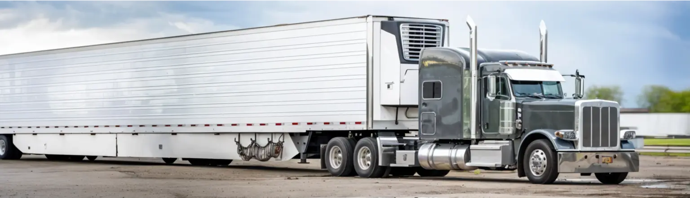

Transporting refrigerated goods in the United States is an exceptionally diligent and delicate practice, requiring a professional approach. No less challenging and all-important is the mission of an owner-operator who transports temperature and time-sensitive freight in reefer trucks. This is where ProfitLane Logistics comes in — we take the chill off of your shoulders by providing you with complete support and equipment!
- No forced dispatch and hidden payments
- Personal dispatcher with 24 / 7 support
- Only 5% of gross